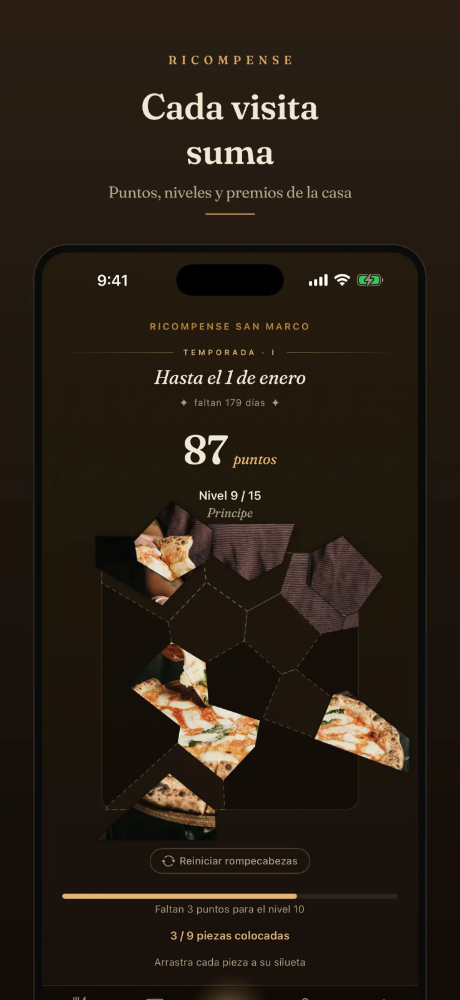
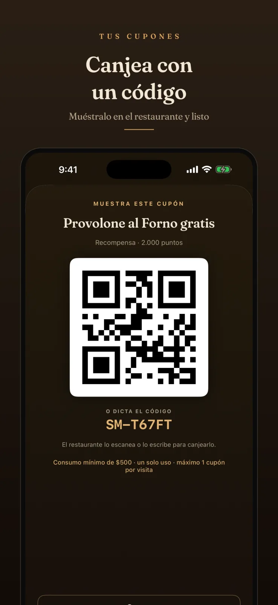
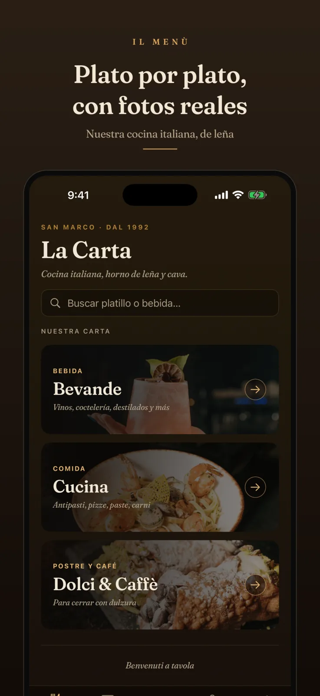

Caso 01 · Restaurante italiano · Atlixco, Puebla
San Marco
Un programa de lealtad hecho juego —torre de niveles, ruleta y un rompecabezas fotográfico— más reservas con negociación en vivo y un panel de operación que el restaurante usa en iPad.
- 2 apps iOS
- En App Store
- Firebase






Tarjetas oficiales de la ficha en App Store.
App del clienteSan Marco
Menú digital, reservas y pedidos para llevar, puntos por visita y consumo, premios por nivel, ruleta y rompecabezas. Inicio de sesión por SMS o con Apple.
App del negocioSan Marco Restaurante
Mapa de mesas en vivo, reservas con contraoferta, escáner de cupones, campañas push, análisis mensual y sub-cuentas de staff con 14 permisos granulares. iPhone y iPad.
- n.º 01Torre de 15 nivelesCada visita suma puntos; cada nivel destapa un premio de la casa.
- n.º 02Ruleta Bronce · Plata · OroEn los niveles clave gira una ruleta; el servidor decide el premio.
- n.º 03Rompecabezas fotográfico15 piezas que se desbloquean al subir de nivel; completarlo premia con vino.
- n.º 04Reservas con contraofertaEl staff puede proponer otra hora o zona; el cliente acepta desde su app.
- n.º 05Mapa de mesas en vivoPlano del restaurante con estados, unión de mesas y lista de espera.
- n.º 06TemporadasEl pase se reinicia por temporada y los puntos de por vida se conservan.
- n.º 07Cupones con QRCanje en caja con escáner integrado y validación en el servidor.
- n.º 08Personal con permisosEl dueño crea cuentas de staff con 14 capacidades granulares.
San MarcoApp cliente (iPhone)
Firebase29 Cloud Functions · Firestore
RestauranteApp staff (iPhone · iPad)
17,533líneas de Swift
29Cloud Functions
24pantallas
15niveles de premio